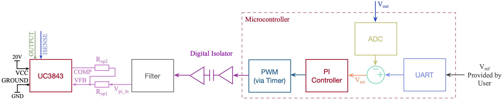

class: title-slide count: false .logo-title[] ## ELECTENG 311 # Electronics Systems Design ### Controller Implementation .TitleAuthor[Duleepa J Thrimawithana] --- layout: true name: template_slide .logo-slide[] .footer[[Duleepa J Thrimawithana](https://www.linkedin.com/in/duleepajt), Department of Electrical, Computer and Software Engineering (2022)] --- name: S1 # Learning Objectives - How to derive the output voltage feedback from ADC measurement - How to calculate the error voltage - How to implement the proportional term - How to digitize an integrator - How to implement the integral term - How to map PI output to D - Anti-windup and implementation - Conditional integration and back calculation schemes - How to test the PI controller - Important aspects to consider when implementing a digital controller --- class: title-slide layout: false count: false .logo-title[] # PI Controller Implementation ### Error Voltage and Proportional Terms --- layout: true name: template_slide .logo-slide[] .footer[[Duleepa J Thrimawithana](https://www.linkedin.com/in/duleepajt), Department of Electrical, Computer and Software Engineering (2022)] --- name: S2 # Controller Implementation .center[] - The PI controller we developed for flyback converter need to be digitized so it can be implemented on an microcontroller - The error voltage can be calculated digitally by taking the difference between measured output voltage using the ADC peripheral and the reference voltage provided by the user via UART communication - Proportional and integral terms of the PI controller is implemented in firmware with anti-windup to update the PWM duty-cycle at each time-step - How to map the output of the PI controller to a duty-cycle? --- name: S3 # Gain of Voltage Measurement .center[<img src="img/V_Meas.png" height="280">] - The step down in voltage achieved by the voltage divider can be quantified by a gain G<sub>vs</sub> \\[ G\_{vs} = R\_b / (R\_a + R\_b) \\] - The analog signal at the ADC pin, is therefore `\( V'_{out} = G_{vs} V_{out} \)` --- name: S4 # Calculating V<sub>out</sub> from ADC Reading .center[<img src="img/V_Meas.png" height="280">] - Assuming V<sub>ref</sub> is 5V, from the ith ADC data sample we can estimate the actual V<sub>out</sub> in mV since \\[ V\_{out} = \text{ADC\_Value[i]} \times \frac {5000} {1024} \times \frac {1} {G\_{vs}} \\] --- name: S5 # Variables Types - We need to select appropriate variable sizes for the controller implementation <table class="tg" style="undefined;table-layout: fixed; width: 1075px; margin-left:auto; margin-right:auto;"> <colgroup> <col style="width: 150px"> <col style="width: 375px"> <col style="width: 25px"> <col style="width: 150px"> <col style="width: 375px"> </colgroup> <thead> <tr> <th class="tg-dzaw"><span style="color:white">Type</span></th> <th class="tg-dzaw"><span style="color:white">Properties</span></th> <th class="tg-dzaw"><span style="color:white"></span></th> <th class="tg-dzaw"><span style="color:white">Type</span></th> <th class="tg-dzaw"><span style="color:white">Properties</span></th> </tr> </thead> <tbody> <tr> <td class="tg-jayl">char</td> <td class="tg-jayl">8 bit variable with -128 to 127 range</td> <td class="tg-jayl"></td> <td class="tg-jayl">unsigned char</td> <td class="tg-jayl">8 bit variable with 0 to 255 range</td> </tr> <tr> <td class="tg-sabo">int8_t</td> <td class="tg-sabo">8 bit variable with -128 to 127 range</td> <td class="tg-sabo"></td> <td class="tg-sabo">uint8_t</td> <td class="tg-sabo">8 bit variable with 0 to 255 range</td> </tr> <tr> <td class="tg-jayl">int16_t</td> <td class="tg-jayl">16 bit variable with -32768 to 32767 range</td> <td class="tg-jayl"></td> <td class="tg-jayl">uint16_t</td> <td class="tg-jayl">16 bit variable with 0 to 65535 range</td> </tr> <tr> <td class="tg-sabo">int32_t</td> <td class="tg-sabo">32 bit variable with -2147483648 to 2147483647 range</td> <td class="tg-sabo"></td> <td class="tg-sabo">uint32_t</td> <td class="tg-sabo">16 bit variable with 0 to 4294967295 range</td> </tr> <tr> <td class="tg-jayl">float</td> <td class="tg-jayl">32 bit variable with ±1.175e-38 to ±3.402e38 range</td> <td class="tg-jayl"></td> <td class="tg-jayl">bool</td> <td class="tg-jayl">1 bit variable (need #include <span><</span>stdbool.h<span>></span>) </td> </tr> </tbody> </table> - Variables can be declared to have either a local or a global scope - Variables can be declared as static, extern and/or volatile - A static variable is initialized to 0 at the start of the program and if in a function value is retained after exiting the function - Volatile modifier is used to ensure the compiler doesn't optimize away a variable - Type casting is used to temporarily change the type/size of a variable --- name: S6 # PI Controller Architecture .center[] - Since our UC3843 inverts the control signal, V<sub>err</sub> is derived by subtracting V<sub>ref</sub> from V<sub>out</sub> - V<sub>err</sub> is multiplied by K<sub>p</sub> to get the proportional term - V<sub>err</sub> is multiplied by K<sub>i</sub> and integrated over time to get integral term - Anti-windup stops the integration once a set upper/lower bound is reached - During windup the integrator is not able to control output thus leading to overshoot/undershoot - Also essential to avoid integer overflow --- name: S7 # Calculating the Error Voltage - Variables **V_out** and **V_ref** store calculated V<sub>out</sub> and user provided V<sub>ref</sub>, respectively - Both these voltages can be stored as mV, to increase precision for fixed-point calculations - Since both V<sub>out</sub> and V<sub>ref</sub> are between 0mV and 30000mV, we can use *uint16_t* variables - Variable **V_err** stores the difference between V<sub>out</sub> and V<sub>ref</sub> - **V_err** should be *int32_t* as it may have to store a value greater than 32767 or less than -32768 due to over/under shoot of V<sub>out</sub> - Normally the **V_err** should be derived by subtracting V<sub>out</sub> from V<sub>ref</sub>, but we need to subtract V<sub>ref</sub> from V<sub>out</sub> to get **V_err** - Remember to use type casting to ensure the result of subtraction is correct .codes[ ```c uint16_t V_out = get_output_voltage_mV(); uint16_t V_ref = get_output_ref_mV(); //Obtaining error voltage (inverse to negate the inversion by UC3843) int32_t V_err = -( (int32_t) V_ref - V_out ); ``` ] --- name: S8 # Calculating the Proportional Term - Knowing the error voltage **V_err**, we can obtain the proportional term, Prop<sub>out</sub>, simply by multiplying **V_err** with **VOLTAGE_KP** - Remember that **V_err** can be as high as ±35000mV - We can store the result in an *int32_t* variable - An extremely large **VOLTAGE_KP** can result in integer overflow - We can use *#define* to define the macro **VOLTAGE_KP** so that the K<sub>p</sub> value can be changed easily to tune the PI controller .codes[ ```c #define VOLTAGE_KP 2 //Kp value used in PI controller to control Vout //Calculating the output of proportional term int32_t Prop_out = V_err * VOLTAGE_KP; ``` ] --- class: title-slide layout: false count: false .logo-title[] # PI Controller Implementation ### Integral Term --- layout: true name: template_slide .logo-slide[] .footer[[Duleepa J Thrimawithana](https://www.linkedin.com/in/duleepajt), Department of Electrical, Computer and Software Engineering (2022)] --- name: S9 # Digital Implementation of Integrator (PI) .center[] - The integral term of a PI controller is calculated in continuos time-domain by integrating the error - A digital implementation of the integral term require discretizing of the integration - To achieve this, the integration of V<sub>err</sub> can be approximated by the rectangular rule - Assuming the digital PI controller is executed every Δt<sub>sample</sub> we can obtain \\[ Int\_{out} = K\_i \int\_{0}^{T} {V\_{err}} \, \mathrm{d}t \quad \Leftrightarrow \quad Int\_{out(N)} = K\_i \sum\_{x=0}^{N} V\_{err(x)} \Delta t\_{sample} \\] --- name: S10 # Digital Implementation of Integrator (PII) .center[] - The output of the integral term, is the accumulated error over time - Int<sub>out(N)</sub>, the integral error for current sample time period, can be calculated by adding the integral error upto the previous sample period with the area under V<sub>err</sub> approximated for the current sample period \\[ Int\_{out(N)} = K\_i \sum\_{x=0}^{N-1} V\_{err(x)} \Delta t\_{sample} + K\_i V\_{err(N)} \Delta t\_{sample} = Int\_{out(N-1)} + K\_i V\_{err(N)} \Delta t\_{sample} \\] --- name: S11 # Firmware for Integrator - We can use *#define* to define the macros **VOLTAGE_KI** and **T_SAMPLE** so that these values can be changed easily to tune the PI controller - **Int_out**, the variable that store the output of the integral term, can be defined as a global variable - **Int_out** needs to retain the value after executing the function that implements PI controller - *float* vs *int32_t* vs *int16_t*, which is the better data type choice for your application? .codes[ ```c #define VOLTAGE_KI 10 //Ki value used in PI controller to control Vout #define T_SAMPLE 1/20000 //Sample time of the PI controller execution static float Int_out; void pi_controller(void){ //... //Calculating the output of integral term Int_out = Int_out + (float)V_err * VOLTAGE_KI * T_SAMPLE; //... } ``` ] --- name: S12 # Summary of Implementation So Far - So far we learnt how to implement the error voltage, proportional term and integral term - We can combine these to form a PI controller function without anti-windup .codes[ ```c #define VOLTAGE_KP 2 //Ki value used in PI controller to control Vout #define VOLTAGE_KI 10 //Ki value used in PI controller to control Vout #define T_SAMPLE 1/10000 //Sample time of the PI controller execution static float Int_out; static float PI_out; void pi_controller(uint16_t V_out, uint16_t V_ref){ int32_t V_err = -( (int32_t) V_ref - V_out ); //Calculating the error voltage int32_t Prop_out = V_err * VOLTAGE_KP; //Calculating the proportional term Int_out = Int_out + (float)V_err * VOLTAGE_KI * T_SAMPLE; //Calculating the integral term PI_out = Prop_out + Int_out; //Calculating the PI output } ``` ] --- class: title-slide layout: false count: false .logo-title[] # Integral Anti-Windup ### Methods and Implementation --- layout: true name: template_slide .logo-slide[] .footer[[Duleepa J Thrimawithana](https://www.linkedin.com/in/duleepajt), Department of Electrical, Computer and Software Engineering (2022)] --- name: S13 # Mapping PI Output to Duty-Cycle - The PI controller output should be limited to pre-determined upper and lower bounds so that it can be mapped to a PWM duty-cycle - The TC0 configuration developed [previously](https://uoa-ee311.github.io/presentations/DigitalL1/presentation.html#51) setup the PWM timer to count from 0 to 159 - Because we are processing mV, the output of the PI controller will be much beyond 0 to 159 - The PI controller output needs to be mapped to be within 0 and 159 so it can be loaded to the output compare register to generate an appropriate duty-cycle - Lets assume we set a symmetric upper and lower bound for the PI controller output - This can be defined as ±PI_LIMIT in your firmware - To map the PI controller output to a PWM timer that counts from 0 to TOP, we should \\[ \text{PI\_out(mapped)} = \text{PI\_out} \frac {\text{TOP}} {2 \times \text{PI\_limit}} + \frac {\text{TOP}} {2} \\] --- name: S14 # Conditional Integration .center[] - We need to stop the integrator accumulating error beyond the set upper and lower bounds (i.e., ±PI_LIMIT) - If the integrator "windup" beyond ±PI_LIMIT, it is not able to control until back within the bounds - Leads to overshoot/undershoot and may result in integer overflow - As shown in the diagram, conditional integration, a popular anti-windup scheme, can be used - It stops the integrator accumulating error once the output of PI controller reach the ±PI_LIMIT --- name: S15 # Back Calculation .center[] - Back calculation methods is another popular anti-windup scheme that is used to stop the integrator accumulating beyond ±PI_LIMIT - A portion of V<sub>saturation</sub> (i.e., the difference between unsaturated and saturated PI<sub>out</sub>) is fed back to the input of the integral term - The portion fed back is determined by K<sub>b</sub>, and is usually set to be equal to K<sub>i</sub>/K<sub>p</sub> --- name: S16 # Implementing Conditional Integration - There are many ways to implement conditional integration in firmware and an example is shown here - This algorithm may be further improved .codes[ ```c #define VOLTAGE_KP 2 //Ki value used in PI controller to control Vout #define VOLTAGE_KI 10 //Ki value used in PI controller to control Vout #define T_SAMPLE 1/10000 //Sample time of the PI controller execution #define PI_LIMIT 1590000 //The +/- saturation limits of the PI controller static float Int_out; static float PI_out; void pi_controller(uint16_t V_out, uint16_t V_ref){ int32_t V_err = -( (int32_t) V_ref - V_out ); //Calculating the error voltage int32_t Prop_out = V_err * VOLTAGE_KP; //Calculating the proportional term //Calculating the integral term and limiting to within +/-PI_LIMIT if it is beyond these limits Int_out = sat_limit_pi(Int_out + (float)V_err * VOLTAGE_KI * T_SAMPLE); //Calculating the PI_out and limiting to within +/-PI_LIMIT if it is beyond these limits PI_out = sat_limit_pi(Prop_out + Int_out); } ``` ] --- name: S17 # Implementing Saturation Limit - The saturation limit may be implemented using a *if-else* statements .codes[ ```c float sat_limit_pi(float result){ if (result > PI_LIMIT){ return PI_LIMIT; //If result greater than upper limit return upper limit } else if (result < -PI_LIMIT){ return -PI_LIMIT; //If result smaller than lower limit return upper limit } else return result; } ``` ] - Note that the saturation limits need to smaller than the largest value that can be stored in the variables *Int_out* and *PI_out* - Also care must be taken to ensure *Prop_out + Int_out* does not overflow - Since our **PI_LIMIT** is much smaller than the range of a *float* this is not a concern --- class: title-slide layout: false count: false .logo-title[] # Testing the PI Controller ### Verifying Using Simulation Tools --- layout: true name: template_slide .logo-slide[] .footer[[Duleepa J Thrimawithana](https://www.linkedin.com/in/duleepajt), Department of Electrical, Computer and Software Engineering (2022)] --- name: S18 # Testing Controller - P & I Terms .center[ ] - The PI controller we developed is simulated in Microchip Studio to verify functionality - Here **VOLTAGE_KP** is 2, **VOLTAGE_KI** is 10000, **T_SAMPLE** is 1/20000 and a **PI_LIMIT** is 40000 - *V_out* is considered to be 10000 and *V_ref* is considered to be 15000 - As shown in the figure on the left, during the first pass through the PI controller, we can observe that the *Int_out* is -2500 and *PI_out* is -12500 - During the second pass, shown on right, both *Int_out* and *PI_out* decreases by 2500 as expected --- name: S19 # Testing Controller - Saturation .center[ ] - We can step through the PI controller until its output reaches upper/lower saturation limits - Here **VOLTAGE_KP** is 2, **VOLTAGE_KI** is 10000, **T_SAMPLE** is 1/20000 and a **PI_LIMIT** is 40000 - When *V_out* is set to 10000 and *V_ref* is set to 15000, as in the figure on the left, both *Int_out* and *PI_out* saturates at -40000 - When *V_out* is set to 20000 and *V_ref* is set to 15000, as in the figure on the right, both *Int_out* and *PI_out* saturates at 40000 --- name: S20 # Testing Controller - Timing .center[] - We can step through the PI controller once and observe time taken to compute the *PI_out* - The PI controller implementation we discussed in this lecture takes 80.56µs to compute a new *PI_out* - This is mostly due to the operations involving *float* and *uint32_t* type variables - The ADC can take a new sample of the V<sub>out</sub> measurement every 60µs if triggered by the PWM timer - We should aim to reduce the computation time of the PI controller to be less than ADC sample time --- name: S21 # Proteus Demo .questions[ An RC filter is used to emulate a simple buck converter. Its input is a PWM signal from the MCU and the output is fed to ADC0. Using a PI controller, control the voltage across C1 to a follow a reference voltage. ] .center[] --- name: S22 # Practical Considerations - Limit cycle oscillations can happen due to quantization introduced by ADC and the PWM generation as well as possibly integer rounding - E.g., We can only generate a duty-cycle to within 0.625% accuracy and if the duty-cycle required falls within this then the output can oscillate between the two nearest D - Discretization lead to delays and can reduce the phase-margin leading to oscillations - With the implementation we explored, the ADC takes 60µs to obtain a new measurement while the PI controller takes about another 81µs to update the duty-cycle - You may use smaller variable sizes (i.e., *int16_t* and *uint16_t*) to significantly reduce the computational time of the PI controller - Integer rounding errors can lead to oscillations - **VOLTAGE_KI** values you can use will be limited - Large changes in the reference voltage (i.e., set point) can lead to significant overshoot or undershoot - Use a ramp limit to slow the change in the reference voltage (i.e., set point) thus helping the controller to catchup --- class: title-slide layout: false count: false .logo-title[] # Questions?